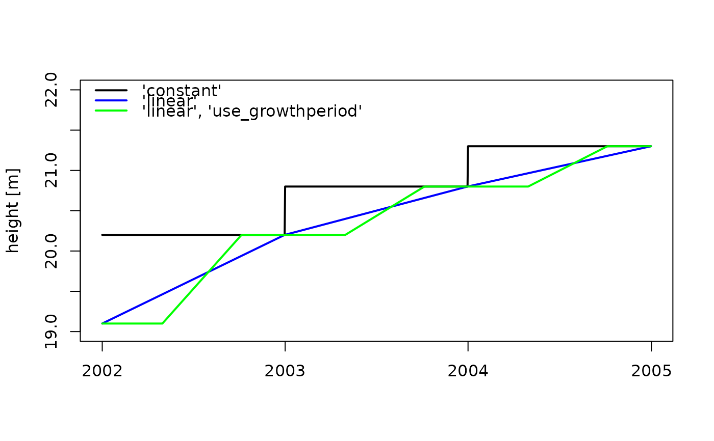

Create a daily sequence of stand properties from parameters using interpolation
Source:R/approx_standprop.R
approx_standprop.RdUses yearly values of inter-annual vegetation development values (e.g. sai, height, densef, age) and interpolates them to a daily sequence.
Usage
approx_standprop(
x_yrs,
y,
y_ini = NULL,
xout_yrs = x_yrs,
use_growthperiod = FALSE,
startdoy = 121,
enddoy = 279,
approx.method = "constant",
return_xout = FALSE
)Arguments
- x_yrs
A sequence of years or a single year.
- y
Vector of the same length as
x_yrs. Ifapprox.method = 'linear', the values are interpreted to be valid at the end of the respective year inx_yrs- y_ini
Initial value used as a starting point for linear interpolation. Interpreted to be valid at the 1st of January of the first year in
x_yrs. Ignored ifapprox.method = 'constant'.- xout_yrs
Vector of years for which output is generated. May be longer or shorter than
x_yrs. For years outsidex_yrs, the value of the closest data extrem is returned.- use_growthperiod
Logical: Use startdoy and enddoy for linear interpolation? If TRUE, yearly changes take place between startdoy and enddoy, othe wise from end of year to end of the year after.
- startdoy
A single value or vector of the same length as
x_yrs, with the day of year when growth begins.- enddoy
A single value or vector of the same length as
x_yrs, with the day of year when growth cessates.- approx.method
Name of interpolation method ('constant' or 'linear').
- return_xout
Logical: If true, daily values of
yand a date vector are returned in a data.frame.
Details
For approx.method = 'constant', the value of y is
returned for the whole respective year in x_yrs, which results in
a yearly changing step function. If approx.method = 'linear', the
values of y are interpolated between the years in x_yrs,
and interpreted to be reached at the 31st of December of the respective
x_yrs. In this case, y_ini is required as an initial value,
from which the sequence is interpolated to the first value of y. The
linear changes are either accomplished between 31st to 31st of December of
the years in x_yrs, or during the growing season only
(use_growingperiod = TRUE).
Examples
years <- 2002:2004
height_yearly <- c(20.2,20.8,21.3)
# constant 'interpolation'
height_c <- approx_standprop(x_yrs = years,
y = height_yearly)
# linear interpolation
height_ini <- 19.1
height_l <- approx_standprop(x_yrs=years,
y = height_yearly,
y_ini = height_ini,
approx.method = 'linear')
# use growthperiod
height_l_gp <- approx_standprop(x_yrs = years,
y = height_yearly,
y_ini = height_ini,
use_growthperiod = TRUE,
startdoy = 121,
enddoy = 279,
approx.method = 'linear')
dates <- seq.Date(from = as.Date(paste0(min(years),"-01-01")),
to = as.Date(paste0(max(years),"-12-31")),
by = "day")
plot(dates, height_c,
type = "l", lwd = 2, col = "black",
ylim = c(19,22), ylab = "height [m]", xlab = "", xpd = TRUE)
lines(dates, height_l,
col = "blue", lwd = 2)
lines(dates, height_l_gp,
col = "green", lwd = 2)
legend("topleft", legend = c("'constant'", "'linear'",
"'linear', 'use_growthperiod'"),
col = c("black", "blue", "green"), lwd = 2, pch = NULL,
bty = "n")
